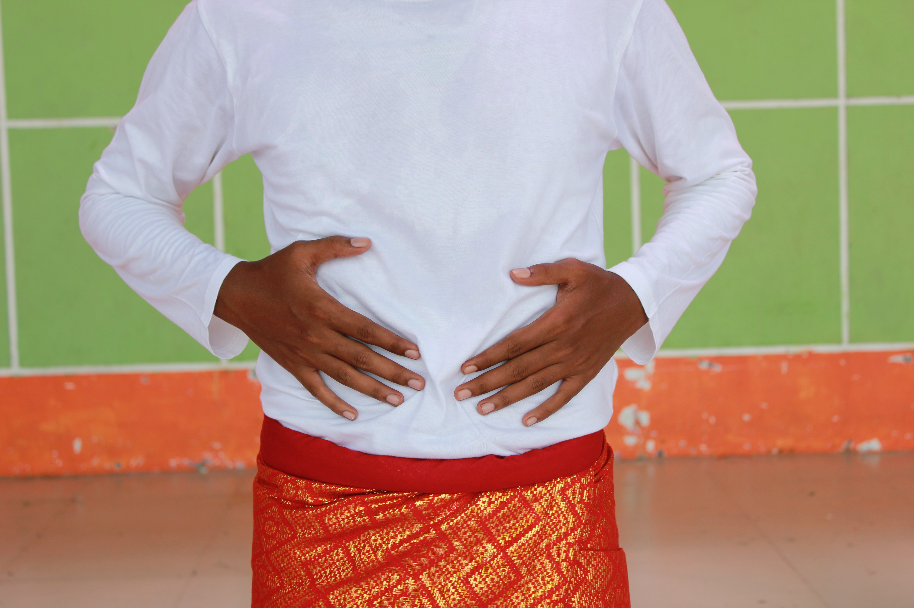
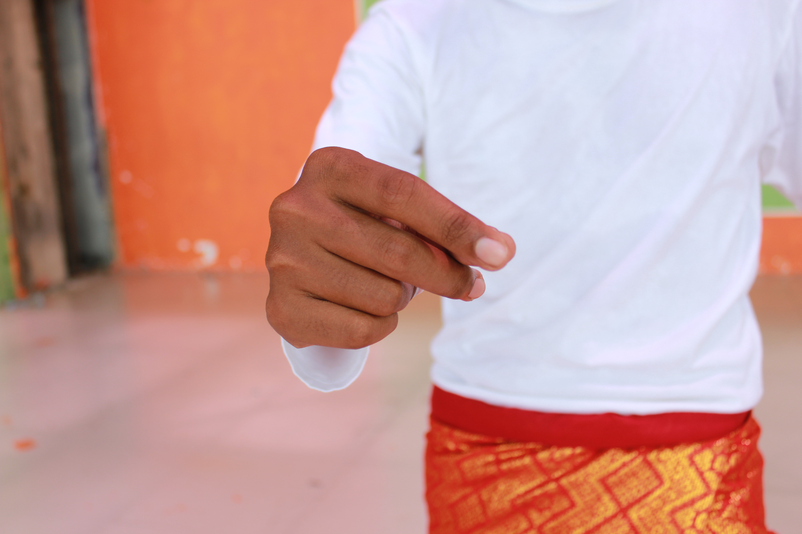
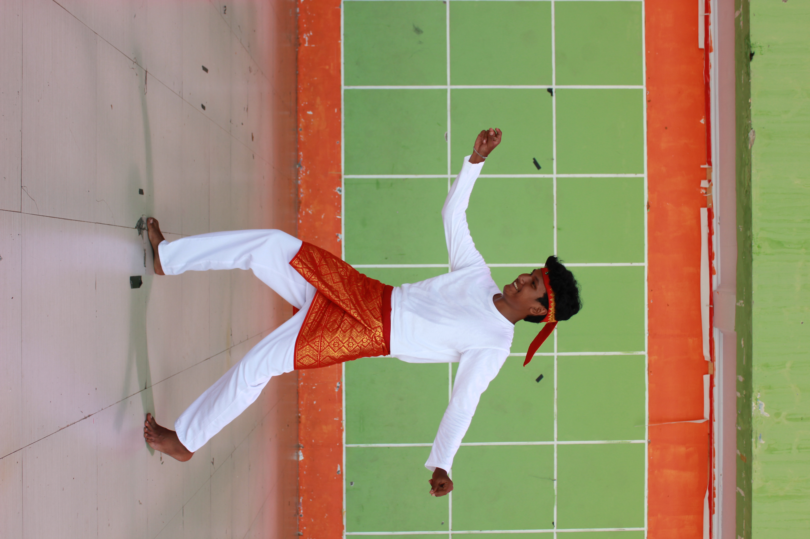
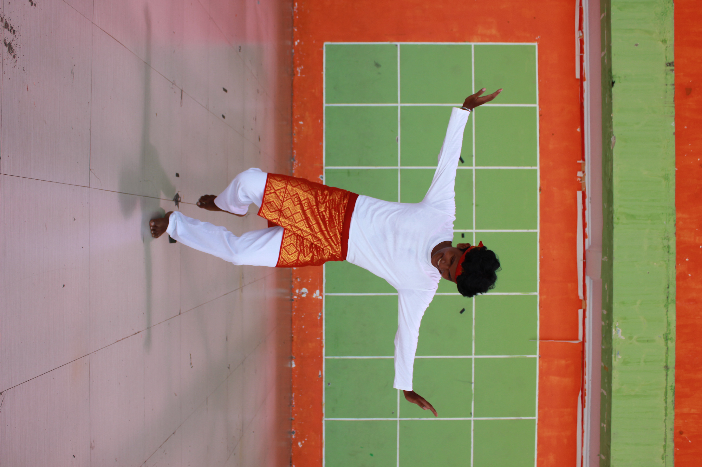
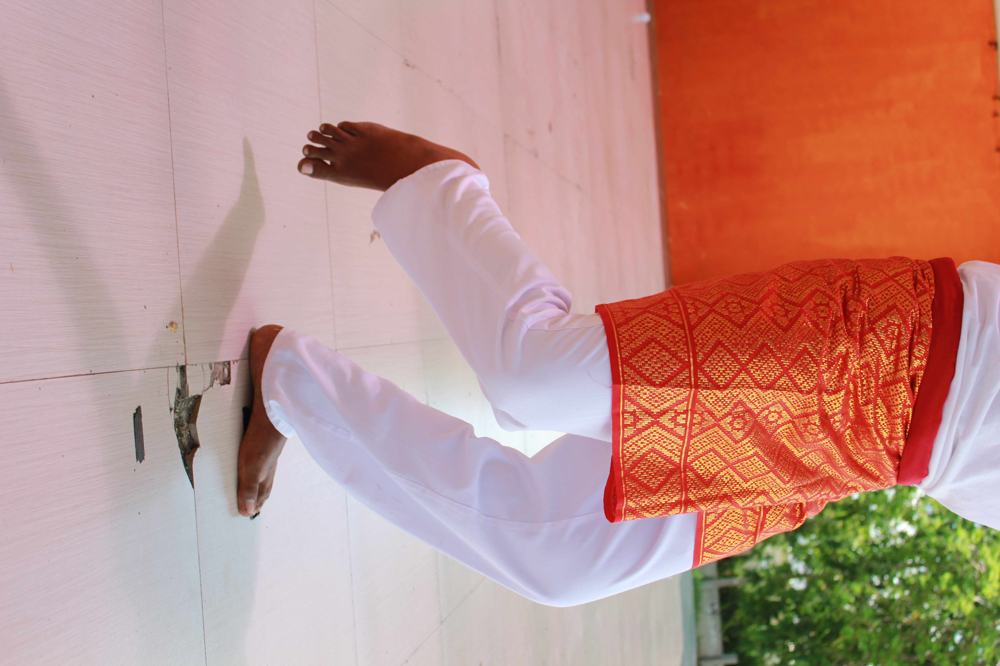

Isi nama dan NIM sesuai data akademik. Data ini digunakan untuk menautkan aktivitas belajarmu pada media ini dengan pretest–posttest penelitian.
Data disimpan hanya selama sesi ini berlangsung di perangkatmu dan tidak dikirim ke server mana pun.
Rampoe Rangka mengajakmu membaca Tari Seudati — warisan gerak masyarakat Aceh — sebagai teks biologi hidup: rangka, sendi, dan otot yang bekerja serentak dalam irama tanpa alat musik.
Tari Seudati · Sanggar Tari Keumala Intan
Media ini disusun mengikuti tahapan pembelajaran penemuan (discovery learning) — urutannya bermakna: kamu diajak mengalami fenomena dulu, sebelum konsep dinamai.
Mengamati fenomena gerak Seudati dan merumuskan pertanyaan pemantik.
Menelusuri lima gerak inti tarian lewat figur anatomi interaktif.
Menghubungkan temuan dengan konsep rangka, sendi, dan mekanisme otot.
Menguji kemampuan memecahkan masalah kompleks (CPS) berbasis skenario.
"Dalam Seudati, tubuh penari adalah instrumennya sendiri — tepukan dada, hentakan kaki, dan lengkingan syair menyatu jadi satu ketukan."
Seudati adalah tari tradisi laki-laki dari Aceh yang mengandalkan saman tubuh — tepukan dada, paha, dan hentakan kaki yang serentak — tanpa iringan alat musik apa pun. Justru di situlah pertanyaannya: gerak apa saja yang membuat tubuh mampu menghasilkan bunyi, ritme, dan keserasian gerak sekompak itu?
Setiap titik keemasan menandai sendi yang aktif pada satu gerak inti Seudati: Dhiet, Keutreb Jaroe, Nyap, Rheng, dan Geutham Gaki. Klik titik pada figur atau daftar gerak di sebelah kanan — keduanya saling terhubung.





figur ilustratif — bukan foto penari
Mulai dari konsep dasar rangka, sendi, dan otot, lalu hubungkan satu per satu dengan gerak Seudati yang baru kamu jelajahi. Buka tiap panel secara berurutan untuk membangun pemahaman yang utuh.
Delapan skenario berikut mengikuti empat dimensi Complex Problem-Solving — memahami masalah, merepresentasikan, merancang solusi, dan memantau/mengevaluasi — dengan dua soal pada tiap dimensi.
Ini menguji dimensi merepresentasikan masalah (representing) — hubungkan tiap gerak Seudati dengan jenis sendi yang mendasarinya. Kartu yang cocok akan terkunci otomatis; jika keliru, kartu kembali ke baki.
0 / 5 tercocok🎉 Semua gerak berhasil dicocokkan dengan tepat! Ini menunjukkan kamu mampu merepresentasikan hubungan antara gerak tari dan struktur sendi yang mendasarinya.
Kebalikan dari Bagian 2 — kali ini kamu mengenali struktur tulang dari gambarnya, lalu menghubungkannya dengan gerakan Seudati yang menggunakannya.
0 / 5 tercocok🎉 Semua gambar tulang berhasil dicocokkan dengan gerakannya! Kamu mampu mengenali struktur rangka secara visual dan mengaitkannya dengan fungsi gerak.